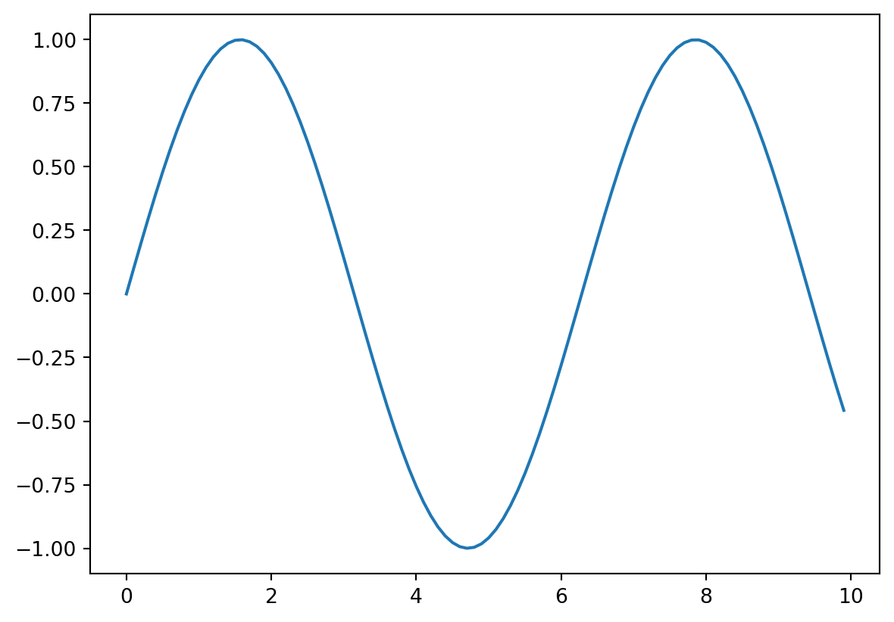

My Awesome Paper
Summary
Training a large deep learning model could benefit from recomputation1 of intermediate activations. This is a technique that allows us to save memory by recomputing intermediate activations during the backward pass. In this post, we will implement this technique in PyTorch and see how it can be used to train a large model.
The bibliography is generated from the bibtex file. The csl file is used to format the bibliography. You can find more CSL files here
Example code block
See this for more details on how to hide code cell and its output. In this example we hide the code cell by using echo: false in the code block.
Example of latex equation
\[ y = \sum_{i=1}^N x_i^2 \]
References
1.
Chen T, Xu B, Zhang C, Guestrin C. Training deep nets with sublinear memory cost. Published online 2016. https://arxiv.org/abs/1604.06174
2.
Baker K. Emulating AC OPF solvers with neural networks. IEEE Transactions on Power Systems. 2022;37(6):4950-4953. doi:10.1109/TPWRS.2022.3195097